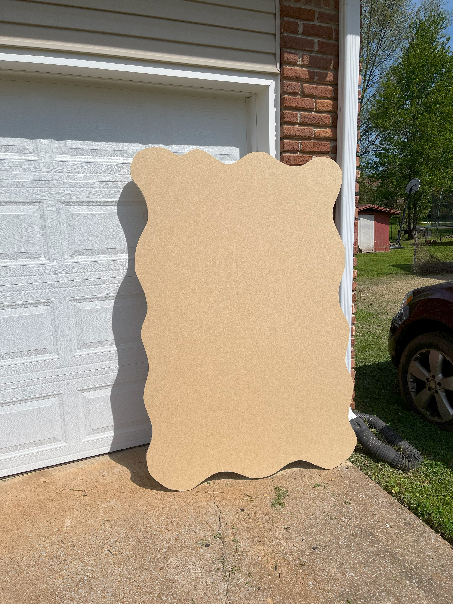
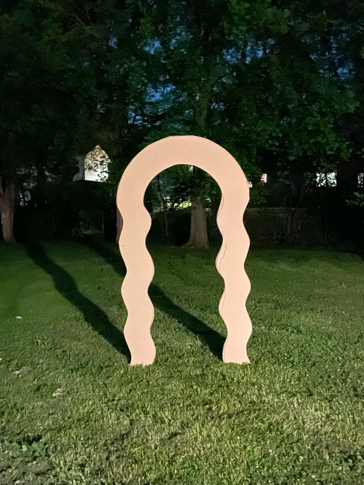
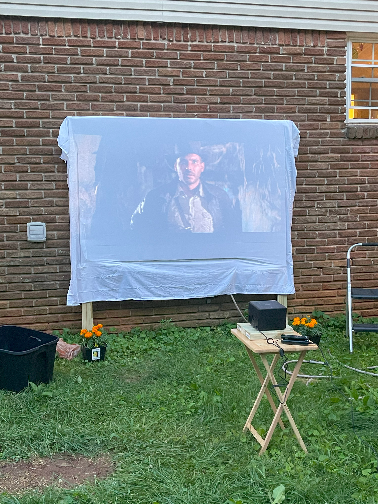
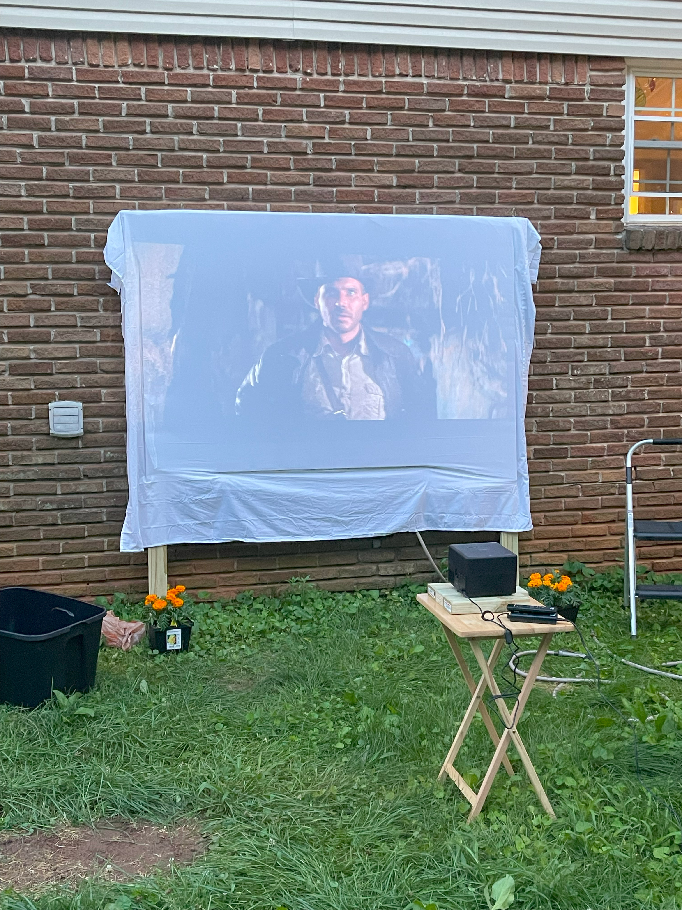

Bridal Shower Signs



A set of MDF signage for Dalton's then-fiance's bridal shower. Made using a jigsaw and a drill. Shortly after the bridal shower, both were sold.
A set of MDF signage for Dalton's then-fiance's bridal shower. Made using a jigsaw and a drill. Shortly after the bridal shower, both were sold.
 

A picnic table made from scratch, and a projector screen to accompany it. Both were created for a camp-themed bachelor/bachelorette party, and have since been well-used. The picnic table has held up to a full table of adults on more than one occasion, and the projector screen has survived the elements.